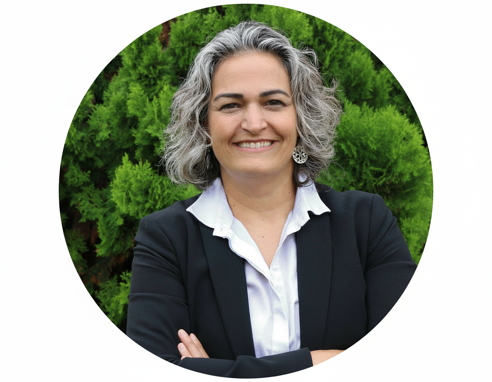
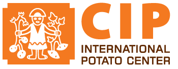

“We approved the strategy months ago. Why does everything still run the old way?”
“How do we make AI genuinely useful to our teams — beyond the pilot?”
“Our results framework satisfies donors. Why doesn’t it help us decide anything?”
How do you design a strategy that survives Monday morning?
If these questions sound familiar, we should connect the dots together. I’m Ale Furtado — I design strategies built to be delivered, and I rescue the ones that weren’t.

About
Hi, I'm Ale.
For over twenty years I've helped international organizations turn big strategies into things teams can actually do on Monday morning. But here's the part I love most: I don't just implement strategy — I love designing strategies that are implementable, too. Give me a tangled problem and a room full of smart people, and I'm right where I want to be.
I'm endlessly curious and a forever-student — always learning something new, always asking what we're really trying to solve. I simplify, I connect the dots, and I make change feel like something people are part of, not something happening to them.
Off the clock, I'm a mum, a cat person 🐱 (don't worry, I love dogs too), and happiest under water. I'm a certified Divemaster 🤿🐠, and the ocean is where I connect my own dots.
Brazilian–Portuguese, based in Europe · Portuguese (native), English & Spanish (fluent), French (intermediate) · MA International Development (Distinction), University of Westminster · PRINCE2
Strategy, made real.
Strategy becomes real not when it is approved — but when teams understand what changes at their operational level.
Most strategies stall in the gap between approval and adoption. I design strategies that close that gap from day one — and I rescue the ones already stuck in it.
What I do
Five ways I help
Strategy that deliversFlagship
From strategy design through to delivery — the governance, decisions, results frameworks, and discipline that turn ambition into what changes on Monday morning.
Advising leaders & boards
A trusted outside head for leaders facing reform or ambiguity — naming the real problem and co-creating the answer.
Digital & AI transformation
Responsible digital and AI that earns its place — governance first, starting with data, so the tools make work easier.
Resource mobilization & partnerships
Durable funding from both sides of the table — the next cycle is won on the first day of delivering this one.
Interim leadership
Step-in leadership through a critical gap — stabilizing a function or steering a crisis until the permanent answer is ready.
Selected impact
What “made real” looks like.
Two decades of experience across funders, implementers & partners





How I work
Approval is not adoption
Connecting the dots
I map what change means for the people living it — the gains, the losses, the fears — and find win-win answers.
The Monday-morning test
Strategy is real when each team knows what changes for them on Monday. I design for adoption, not approval.
Trust, before and when conditions shift
Trust comes from the clarity of every interaction — especially when conditions change.
Co-creation, not handover
Solutions are built with your teams — which is why they keep working long after I've gone.
Get in touch
Tell me what you're navigating — a strategy that won't land, a reform that's stalled, a digital investment that needs to earn its place. And if you're not yet sure where the real problem sits, that's often the first thing we'll figure out together.